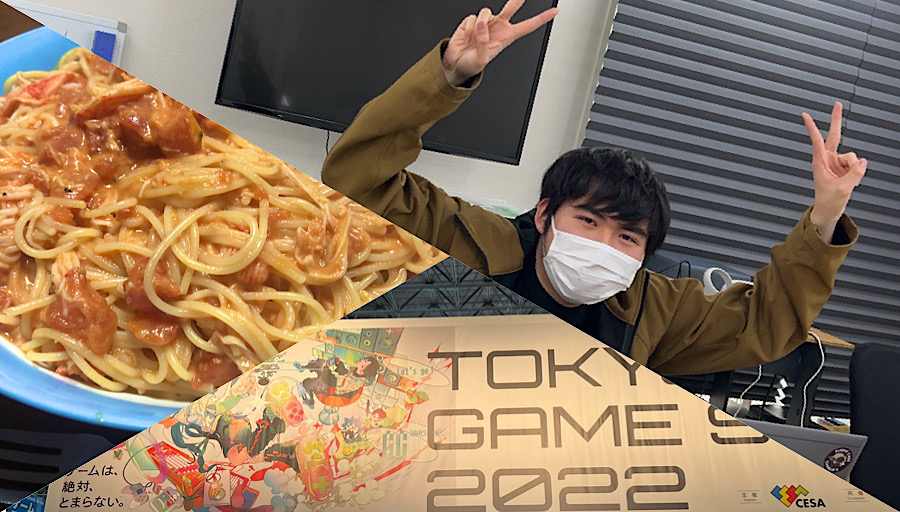

Komyo
Homepage
トップページ
プロフィール
制作ゲーム
▼
まりもねこ
Rebone running over
ゆるっとチェインパズル

プロフィール
名前:
光明
こうみょう
泰幸
やすゆき
東京コミュニケーションアート専門学校ゲームプログラマー専攻2年、2025年卒業見込み
スキル:GitHub,Sourcetree,unity,c#,c.c++(勉強中)
趣味:ゲーム（GGST、OW、ウマ娘、メギド72）、料理、音楽鑑賞（the pillows、パンクロック）
長所:行動力、人当たりの良さ、新しい事への適応力
最近うれしかったこと:GGSTで天上界に到達！ずっと詰まっていたプログラムが解決！！！